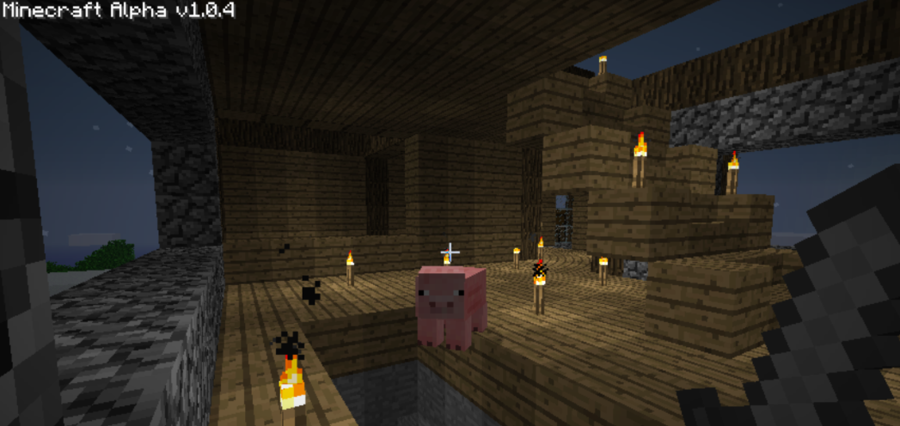

Welcome!
Hello! Welcome to my website! Right now I'm not sure what would be the focus of my personal website, but currently my lineup is:
- Coding
- Games
- General stuffs thats not supposed to be in a portfolio
I made this website because I kept seeing videos about the Indie Web, so those videos piqued my interest in it. I also made this to advance study doing website development so that I'll be able to focus more on my other subjects (win-win!). Currently the website as it is is very unfinished since I'm doing it concurrently as I progress through The Odin Project, so please have patience. Thanks for visiting!
Future Plans
Happy new year everyone! Hope everyone have had a great holiday! As you may remember, I've had a roadmap of this website's future features. However, cacheing generally just threw a wrench at my plans, so I'm moving towards using SSG (specifically 11ty). I guess this also means users who've disabled javascript is guaranteed to see the entire site except for specific parts of a page that uses one.
With this in mind, I don't really have any incentive to follow through with the roadmap in v1. All of those will be integrated during the development of v2. I guess this is for the best, so I can actually focus more on creating content in my site rather than fight my way through the syntaxes and such.
I do have something currently cooking though, and while I'm excited (and impatient) to write about it, it does have to cook a little bit more in-game, so here a screenshot instead:
